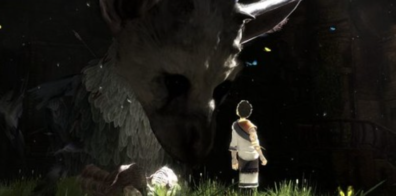

The Last Guardian is an action-adventure game that takes place in ancient ruins. In this game, you play as a boy who found himself in a large hole away from his town and with strange tattoos on his body, when he soon finds out that he was in the hole with one of the infamous "man eaters;" Trico; a beast with seperate body parts from different animals. As the game progresses, you eventually become friends with Trico and together try to find your homes.
The game takes you through many stages throughout these ancient ruins, with adventure and peril around every corner. There isn't a moment where The Last Guardian won't have you on the edge of your seat, wondering what will happen next, which is also what makes it so enjoyable. The visuals and scenery in The Last Guardian are absolutely breathtaking, and you will always be stopping just to take a look at the buildings and nature around you.
